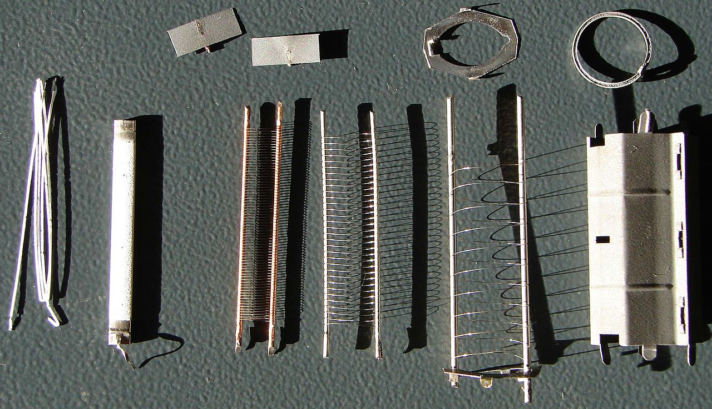

Pentoda jest próżniową lampą elektronową zawierającą pięć elektrod: anodę, żarzoną katodę i trzy siatki.
Pentody były bardzo wszechstronnymi i popularnymi lampami elektronowymi znajdującymi zastosowanie w szerokiej gamie układów elektronicznych.
Pentoda powstała jako rozwinięcie tetrody, przez dołożenie dodatkowej, trzeciej siatki pomiędzy siatkę drugą (ekranującą) a anodę. Modyfikacja ta usuwa istotną wadę tetrody, jaką jest zachodzenie w niej zjawiska dynatronowego będącego rezultatem emisji wtórnej. Uderzające w anodę elektrony wybijają z niej elektrony wtórne. Jeśli napięcie siatki ekranującej jest większe od anodowego, część elektronów wtórnych osiąga tą siatkę powodując zniekształcenie charakterystyki anodowej. Dodatkowa trzecia siatka ma niski potencjał (z reguły jest połączona z katodą) i jest dość rzadka. Obniża ona potencjał w przestrzeni pomiędzy anodą a siatką drugą, co powoduje zawrócenie elektronów wtórnych na powrót do anody. Wprowadzenie trzeciej siatki pozwala uniknąć negatywnych skutków emisji wtórnej, a ponadto zwiększa efekt ekranowania siatki sterującej (pierwszej) od anody. Charakterystyki pentod są podobne do charakterystyk tetrod, mają one nieco większą rezystancję wyjściową i mniejszą pojemność anoda-siatka druga.
Gdy siatka jest spolaryzowana ujemnie (w stosunku do katody) hamuje ona elektrony i zawraca je do katody zmniejszając prąd anodowy. Przy katodzie tworzy się wtedy chmura przestrzennego ładunku ujemnego (elektronów), która przeciwdziała emisji elektronów z katody. Gdy siatka jest spolaryzowana dodatnio, dodatkowo przyspiesza elektrony, zwiększając płynący prąd (część elektronów dociera jednak wtedy do siatki powodując przepływ prądu w jej obwodzie).
Historia:
- Pierwszą lampę z trzema siatkami (typu DU412) opracowała węgierska firma Vatea około roku 1925.Nie była to klasyczna pentoda, ale raczej tetroda z dodatkową siatką przeciwładunkową (umieszczoną pomiędzy katodą a siatką sterującą). Dodatkowa siatka umożliwiała pracę lampy przy niskim napięciu anodowym.
- Klasyczną pentodę z siatką hamującą umieszczoną między siatką ekranującą a anodą wynalazł w 1927 Bernard D.H. Tellegen.
- We wrześniu 1927 Philips wypuścił pierwszą pentodę - głośnikową B443. Choć pierwsze pentody wykorzystywano jako lampy głośnikowe (wzmacniacze na pentodzie miały lepszą sprawność niż wzmacniacze na triodach), szybko stały się one podstawowymi lampami wzmacniającymi, zwłaszcza w zakresie wysokich częstotliwości.
Rodzaje i zastosowania:
- Pentody napięciowe
- Selektody
- Lampy złożone
-
Pentody szerokopasmowe
- Z siatką napinaną
- Z emisją wtórną
- Pentody mocy
- Lampy złożone
- Pentody mieszające
- Pentody nadawcze
 Części składowe pentody EL84 od lewej: na górze: dwa radiatory siatki sterującej, górny mostek mikowy, pochłaniacz gazów - getter; na dole (w lampie umieszczone koncentrycznie): włókno żarzenia, pośrednio żarzona katoda tlenkowa, siatka sterująca, siatka ekranująca, siatka hamująca, anoda; brakuje bańki i cokołu.